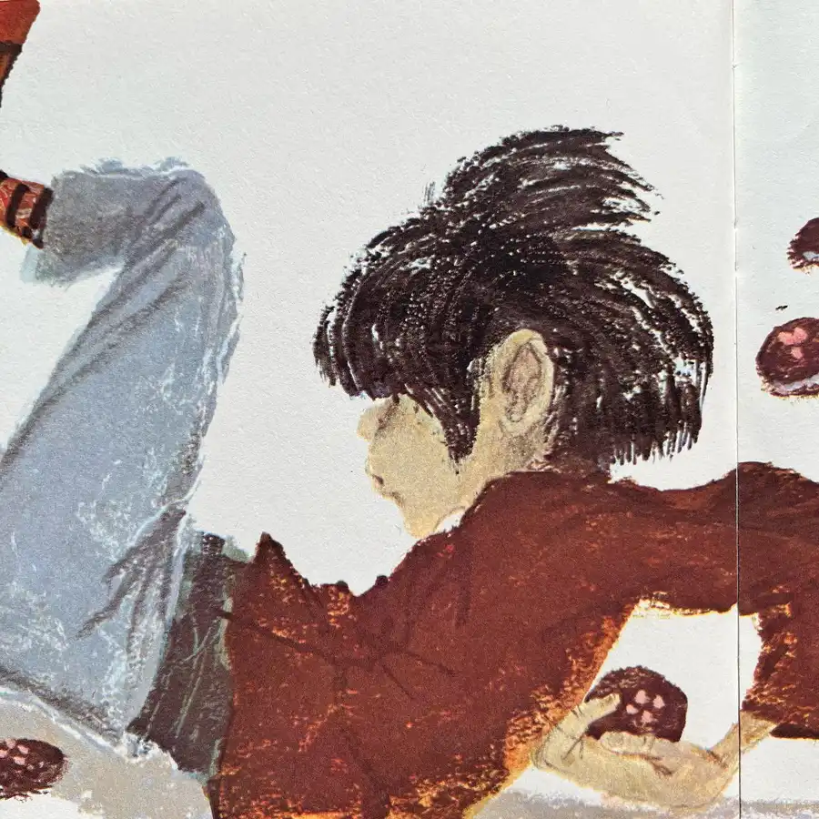
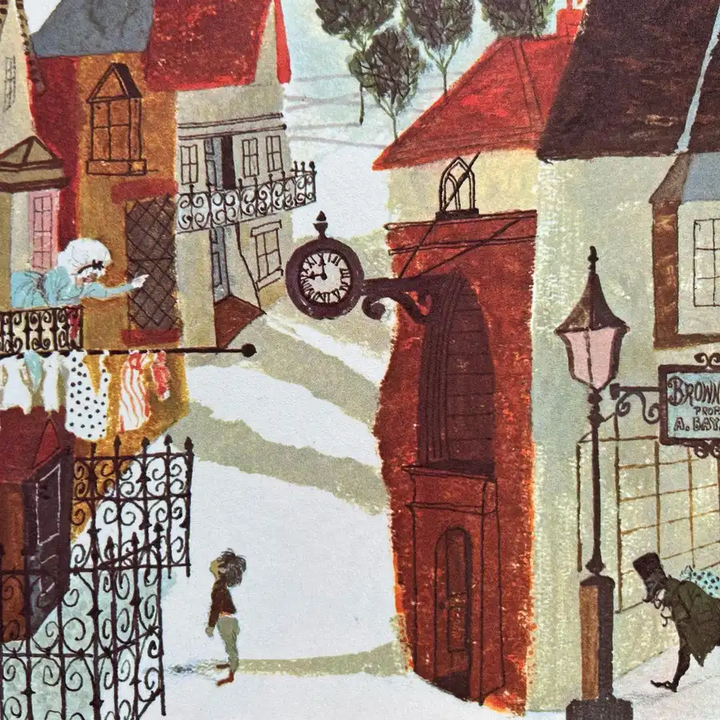
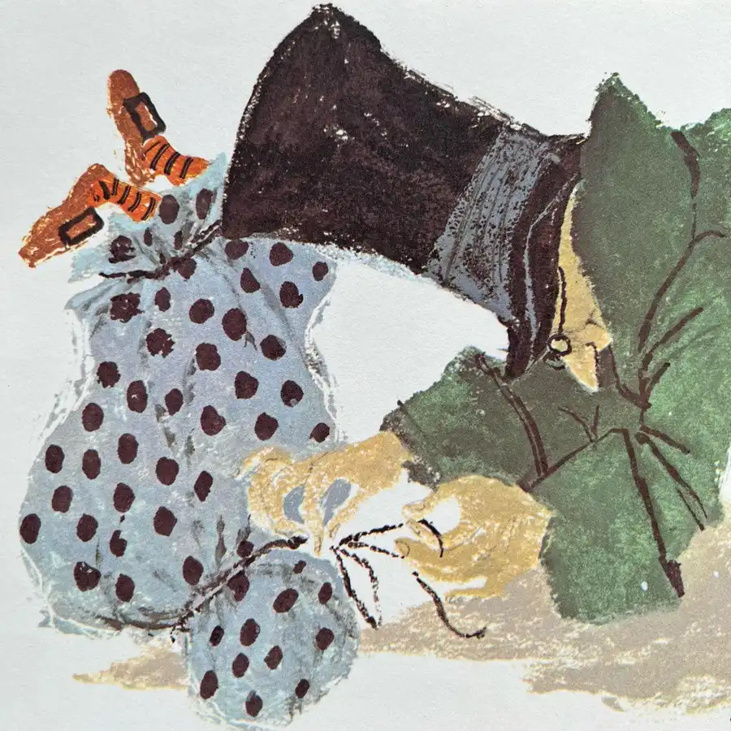
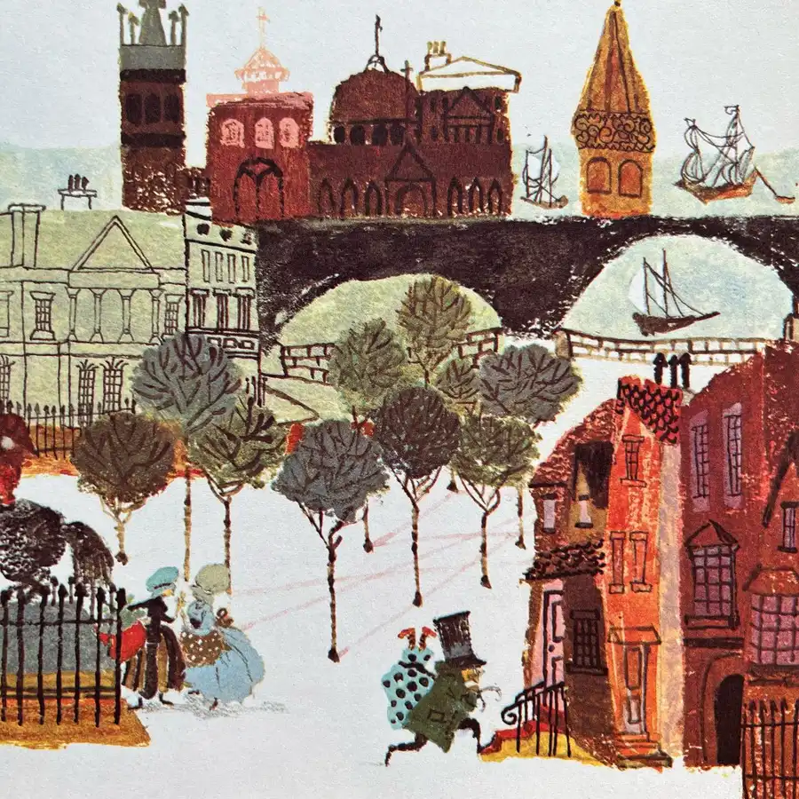
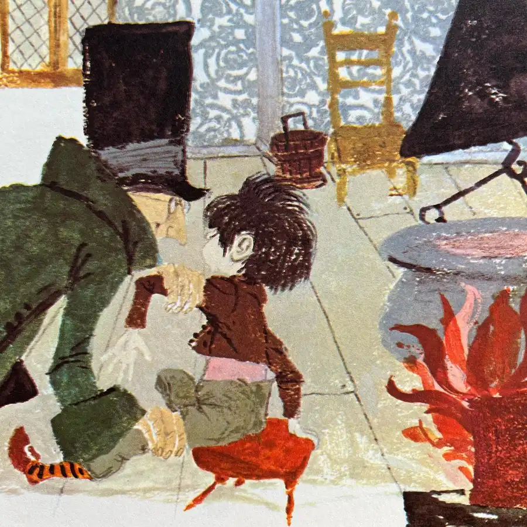
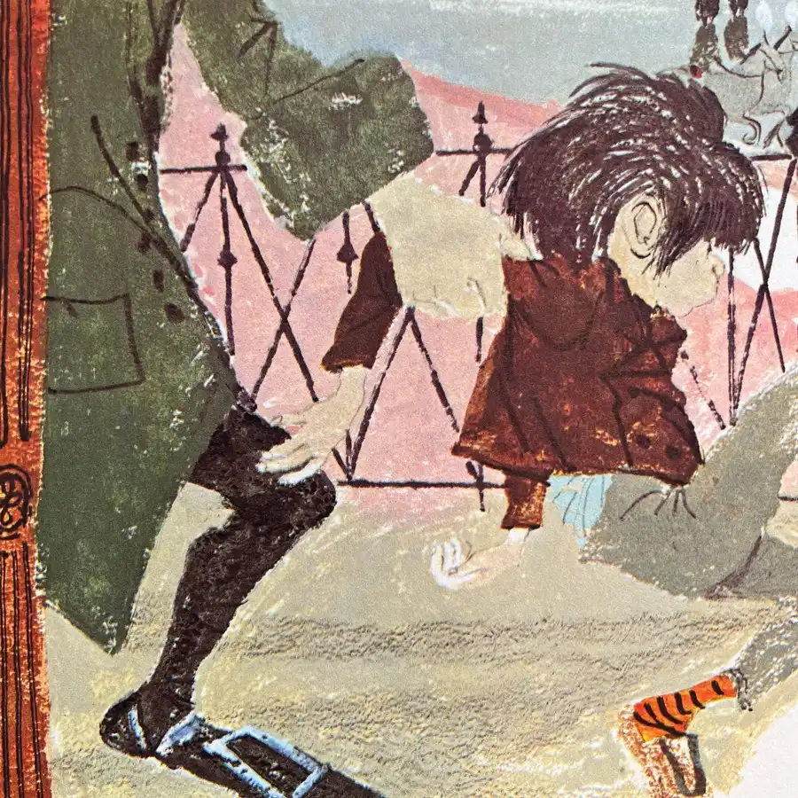
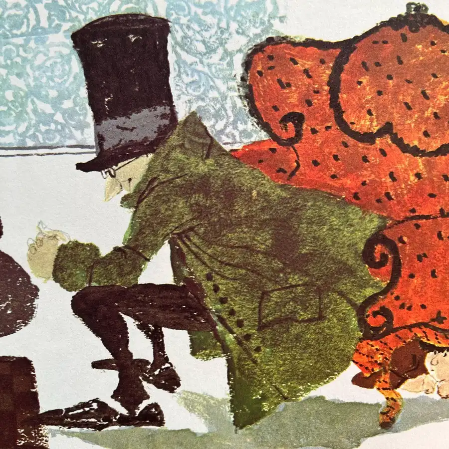
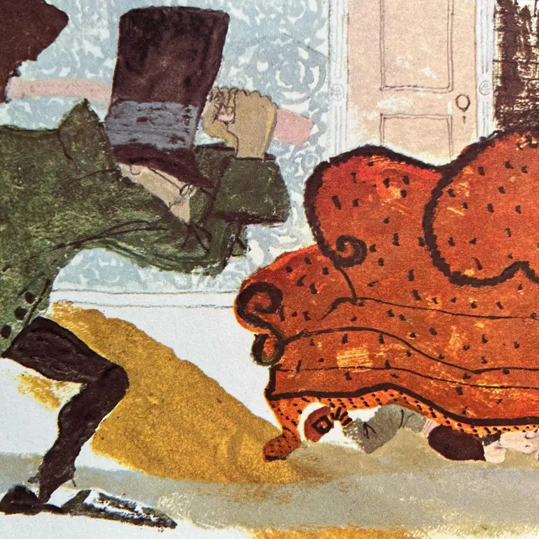
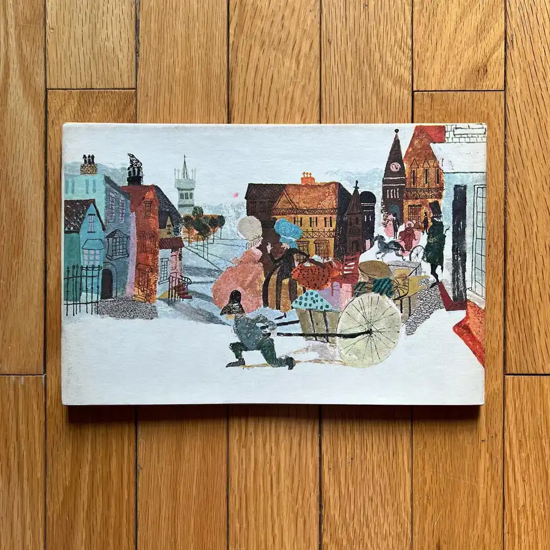

A stark and eerie cautionary story is Mr. Miacca, an English folktale illustrated by Evaline Ness. Tommy’s mother warns him to behave and never to leave the street where they live. If he disobeys, she tells him, a sinister figure known as Mr. Miacca will steal him away. The boy ignores his mother’s words, however, and goes around the corner, whereupon the feared boogeyman does indeed catch him, throw him into a sack, and carry him off. Tommy must use all his wits and guile to escape before the wicked Mr. Miacca and his wife boil him for their supper. Ness frankly portrays the horrors of this kidnapping plot with strong lines and an earthy color palette. #child #warning #escape #book #books #childrensbooks #beautifulbook #beautifulbooks #beautifulbookcover #beautifulbookcovers #picturebook #picturebooks #picturebookillustration #picturebookillustrations #picturebookart #classicchildrensbooks #childrensbookillustration #childrensliterature #illustration #kidlit #kidsbooks #bookworm #booklover #booklovers #bibliophile #bookstagram #bookstagrammer #bookstagrammers #instabook #instabooks









